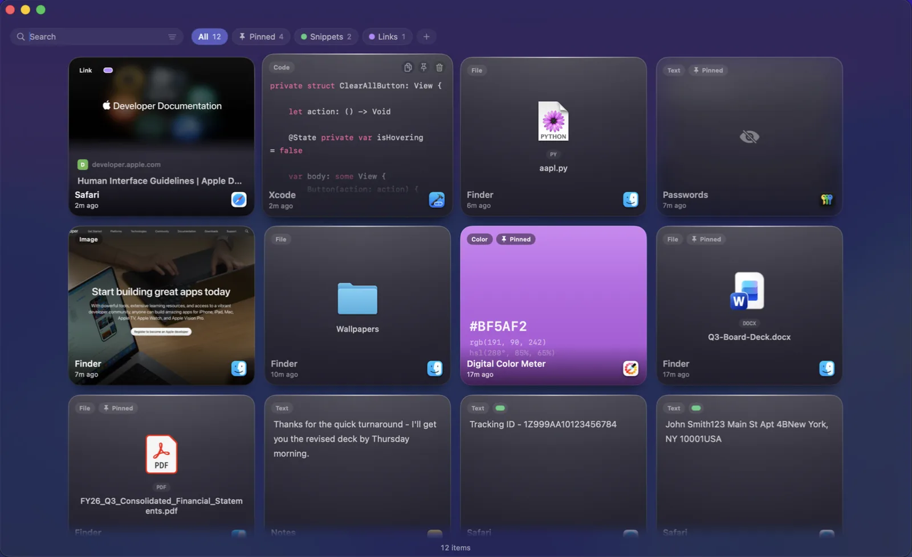
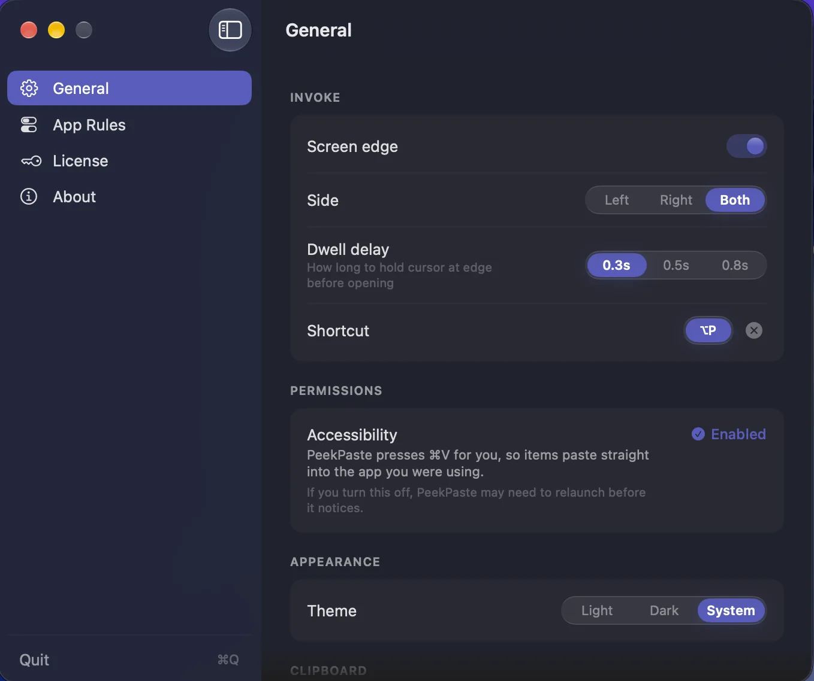
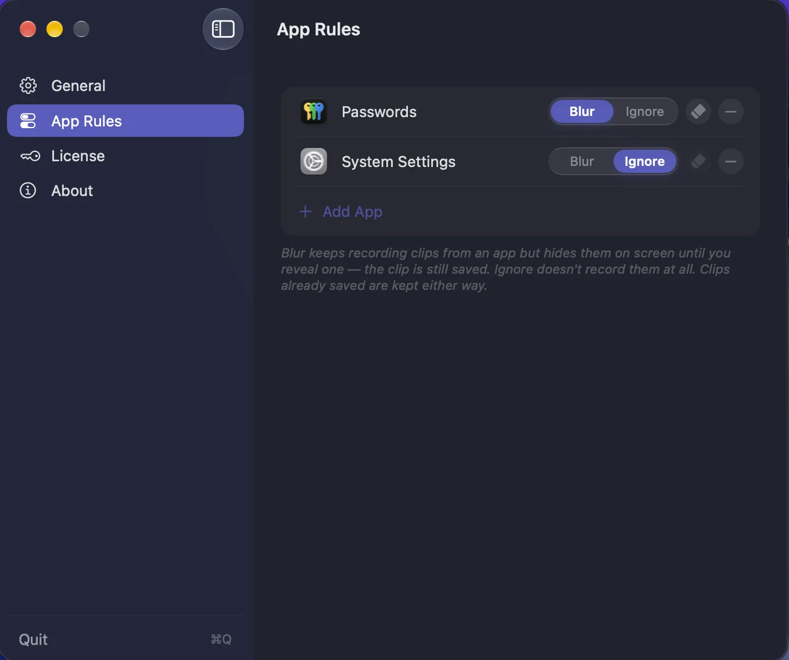

CLIPBOARD · WORKFLOW
PeekPaste
Your clipboard, within reach.
What you copied is still there. PeekPaste keeps a thoughtful history of text, code, links, images, colours and files, then brings it back with a simple gesture: move your pointer to the edge of the screen.
At the edge, when you need it.
Move your pointer to the edge of the screen and PeekPaste appears over your work. Choose the edge, set a dwell delay, or use a keyboard shortcut instead.

More than a list.
Each clip is presented for what it is. Code is syntax-highlighted. Links carry their title and preview. Colours become swatches. Files remain files. Every item remembers where it came from.
Read it before you paste it.
Press Space to instantly preview any clip. Code stays syntax highlighted, documents remain readable, and images open at full size — so you know it's the right one before you paste.
Find the words in your screenshots.
PeekPaste recognises text in captured images on your Mac, so an error message, receipt or slide is as easy to find as a line of copied text. Nothing is uploaded.
Everything in its place.
Categories, pins and filters help keep your clipboard tidy, so finding what you copied takes seconds.

Make it yours.
Choose your preferred screen edge, keyboard shortcut, appearance and paste behaviour. PeekPaste adapts to the way you work.

Private by design.
Everything stays on your Mac. Choose what PeekPaste remembers, what stays hidden, and how long clips are kept.
Core Features
Screen-Edge Trigger
Push your pointer to the edge and it appears. Configurable side and dwell delay, or a global shortcut instead.
Knows Every Type
Text, code, links, images, colours and files — each rendered as what it actually is, with the app it came from.
Searchable Screenshots
Text inside images is recognised on-device, so a screenshot is findable by the words inside it.
Space to Preview
Hover a card, press Space, see the whole clip. Move to the next and the preview follows you.
Drag Anywhere
Drag a clip into any app, or onto the Desktop to save it as a file.
Plain Text & Transforms
Strip formatting on the way out, or change case, trim whitespace, and encode URLs without touching the original.
Pins & Categories
Pin what you reach for constantly. File the rest into categories you name and colour yourself.
Passwords Stay Hidden
Confidential content is never legible on screen. Skip password managers entirely, or ignore any app you name.
You Choose How Long
Keep clips for a week, a month, a year, or forever. Old ones clear themselves.
Strict Privacy
No analytics. No account. No sync server. Everything is local and stays on your Mac.
Stays Out of the Way
No Dock icon and no window to manage. Light, dark, and Reduce Motion all respected.
One-Time Purchase
$9.99 once. No subscription. Lifetime access including all future updates.
Pricing
One price. Lifetime access.
One-time payment. No subscription. Get lifetime access to PeekPaste on your Mac.
No subscription. No account required.
- 7-day free trial
- One-time payment
- Lifetime updates included
- Every feature unlocked from day one
- Native macOS app (Apple Silicon)
- Fully offline & private
Secure checkout via App Store (local pricing) or Lemon Squeezy (USD, powered by Stripe).
FAQ
What does PeekPaste do?
PeekPaste remembers everything you copy — text, code, links, images, colours and files — and gives it back when you need it. Push your pointer against the edge of the screen and a panel of your recent clips slides in over whatever you were doing. Click one and it goes straight back into the app you were in.
How do I open it?
Push your pointer against the edge of the screen. You can choose which edge and how long the pointer has to rest there, or turn the edge trigger off entirely and use a keyboard shortcut instead. Both work together if you want them to.
Can it find text inside screenshots?
Yes. Text inside captured images is recognised on your Mac and made searchable, so a screenshot of an error message or a receipt can be found by searching for words that appear inside the picture. It runs entirely on-device — nothing is uploaded.
What about passwords?
When a password manager marks content as confidential, macOS flags it and PeekPaste honours the flag — the clip can be pasted again but is never legible on screen. You can also switch off password capture entirely, name specific apps PeekPaste should never record from, and mark any individual clip as sensitive.
Does it send my clipboard anywhere?
No. Your clipboard history is stored locally on your Mac. PeekPaste does not use analytics or a clipboard sync service. When you copy a web link, it can fetch that link's preview; your clipboard contents are not otherwise sent to LucidBit.
Why does it ask for Accessibility permission?
Only if you choose automatic pasting. PeekPaste uses the permission to return to the app you were using and send ⌘V for you. You can skip it at any time: PeekPaste will place the clip on your clipboard, ready for you to paste normally.
Is it Apple Silicon native?
Yes — native arm64 build. Runs on macOS 14 (Sonoma) or later.
Is it a subscription?
No. $9.99 once, with a 7-day free trial. One purchase, all future updates.
From the Blog
The best clipboard managers for Mac (2026)
Paste, Maccy, Raycast, Alfred, Copy 'Em, PastePal, PeekPaste — three tribes of clipboard manager, and which one fits which kind of work.
How to calm a busy Mac desktop (2026 guide)
Dimming, backdropping, and full-screen isolation — the three approaches to a calm workspace.